Map
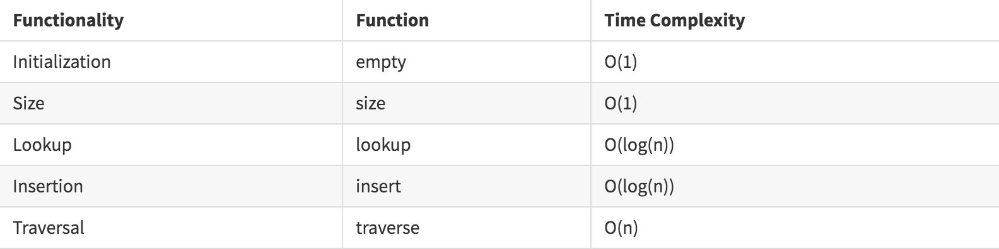
map是将Ord键的任何实例映射到任何类型的值的关联数组。1
2
3
4
5
6
7
8
9
10import qualified Data.Map as Map
kv :: Map.Map Integer String
kv = Map.fromList [(1, "a"), (2, "b")]
lkup :: Integer -> String -> String
lkup key def =
case Map.lookup key kv of
Just val -> val
Nothing -> def
Tree
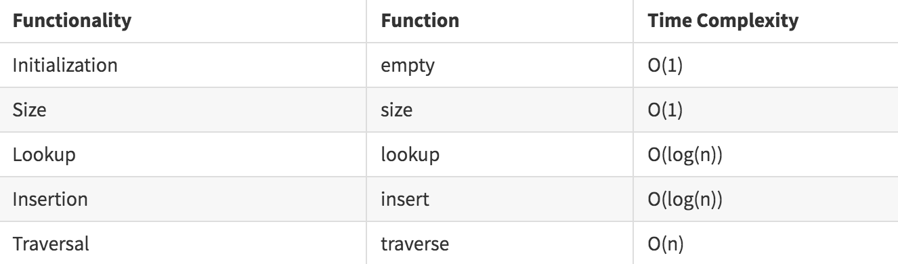
1 | import Data.Tree |
Set
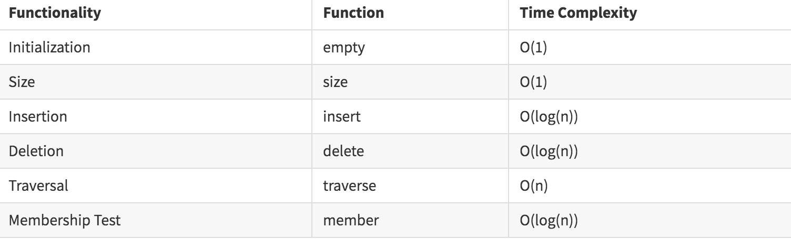
Sets是一种无序的数据结构，允许任何类型的Ord值，并保证结构中的唯一性。尽管它们具有相同的名称，但它们与Set的数学概念并不相同。1
2
3
4
5
6
7import qualified Data.Set as Set
set :: Set.Set Integer
set = Set.fromList [1..1000]
memtest :: Integer -> Bool
memtest elt = Set.member elt set
Vector
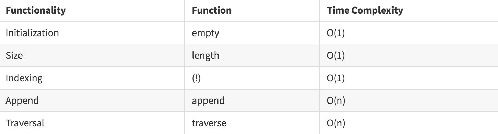
向量是高性能的一维数组，有六种变体，对于以下类型的可变和不可变变体各有两种。
- Data.Vector
- Data.Vector.Storable
- Data.Vector.Unboxed
向量最显着的特征是通过(!)进行恒定时间的内存访问，以及在生成令人惊讶的最佳代码的fusion(融合)框架之上的各种高效的map,fold和scan操作。1
2
3
4
5
6
7
8
9
10
11
12
13
14
15fromList :: [a] -> Vector a
toList :: Vector a -> [a]
(!) :: Vector a -> Int -> a
map :: (a -> b) -> Vector a -> Vector b
foldl :: (a -> b -> a) -> a -> Vector b -> a
scanl :: (a -> b -> a) -> a -> Vector b -> Vector a
zipWith :: (a -> b -> c) -> Vector a -> Vector b -> Vector c
iterateN :: Int -> (a -> a) -> a -> Vector a
import Data.Vector.Unboxed as V
norm :: Vector Double -> Double
norm = sqrt . V.sum . V.map (\x -> x*x)
example1 :: Double
example1 = norm $ V.iterateN 100000000 (+1) 0.0
請看:
Mutable Vectors
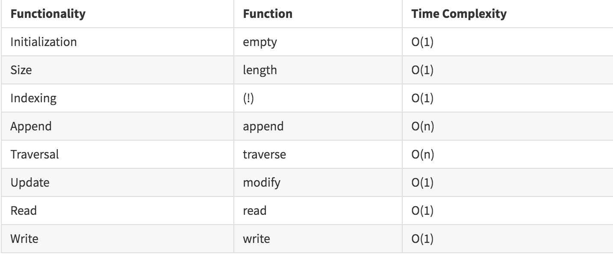
1 | freeze :: MVector (PrimState m) a -> m (Vector a) |
在IO monad中，我们可以以恒定的时间读写对可变向量执行任意读写。必要时，可以使用freeze/thaw函數从MVector创建静态Vector。1
2
3
4
5
6
7
8
9
10
11
12
13
14
15
16
17
18
19
20
21
22
23
24
25
26
27
28
29import GHC.Prim
import Control.Monad
import Control.Monad.ST
import Control.Monad.Primitive
import Data.Vector.Unboxed (freeze)
import Data.Vector.Unboxed.Mutable
import qualified Data.Vector.Unboxed as V
example :: PrimMonad m => m (V.Vector Int)
example = do
v <- new 10
forM_ [0..9] $ \i ->
write v i (2*i)
freeze v
-- vector computation in IO
vecIO :: IO (V.Vector Int)
vecIO = example
-- vector computation in ST
vecST :: ST s (V.Vector Int)
vecST = example
main :: IO ()
main = do
vecIO >>= print
print $ runST vecST
向量库本身通常会对索引操作进行边界检查，以防止内存损坏。通过使用boundschecks cabal标志进行编译，可以在库级别启用或禁用此功能。
Unordered-Containers(无序容器)
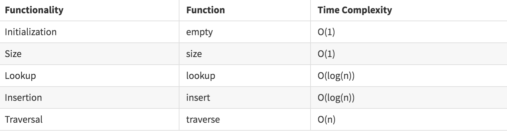
1 | fromList :: (Eq k, Hashable k) => [(k, v)] -> HashMap k v |
HashMap和HashSet都是纯函數性数据结构，是containers(容器)等价物的替代品，但具有更高效的空间和时间性能。此外，所有存储的元素都必须有一个Hashable实例。1
2
3
4
5
6
7
8import qualified Data.HashSet as S
import qualified Data.HashMap.Lazy as M
example1 :: M.HashMap Int Char
example1 = M.fromList $ zip [1..10] ['a'..]
example2 :: S.HashSet Int
example2 = S.fromList [1..10]
請看:
Hashtables
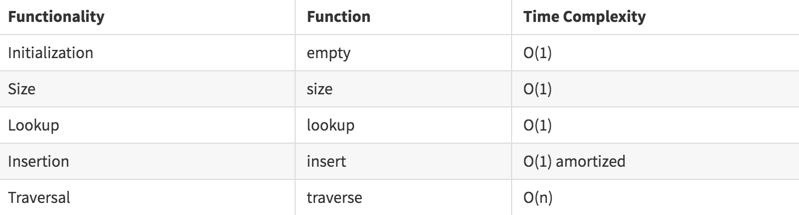
Hashtables在ST或IO monad中提供高效查找的哈希表。
1 | import Prelude hiding (lookup) |
Graphs
containers库中的Graph模块是用于处理有向图的有点过时的API。
一点点的数据包装使它更易于使用。该库不一定非常适合于大型图论操作，但非常适合用于需要解析模块定义图的强连接组件的类型检查器中。1
2
3
4
5
6
7
8
9
10
11
12
13
14
15
16
17
18
19
20
21
22
23
24import Data.Tree
import Data.Graph
data Grph node key = Grph
{ _graph :: Graph
, _vertices :: Vertex -> (node, key, [key])
}
fromList :: Ord key => [(node, key, [key])] -> Grph node key
fromList = uncurry Grph . graphFromEdges'
vertexLabels :: Functor f => Grph b t -> (f Vertex) -> f b
vertexLabels g = fmap (vertexLabel g)
vertexLabel :: Grph b t -> Vertex -> b
vertexLabel g = (\(vi, _, _) -> vi) . (_vertices g)
-- 拓扑排序图
topo' :: Grph node key -> [node]
topo' g = vertexLabels g $ topSort (_graph g)
-- 图的强连接组件
scc' :: Grph node key -> [[node]]
scc' g = fmap (vertexLabels g . flatten) $ scc (_graph g)
因此，例如，我们可以构造一个简单的图形:
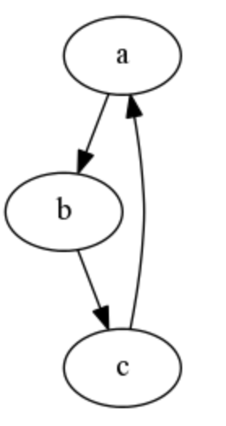
1 | ex1 :: [(String, String, [String])] |
或具有两个紧密相连的子图:
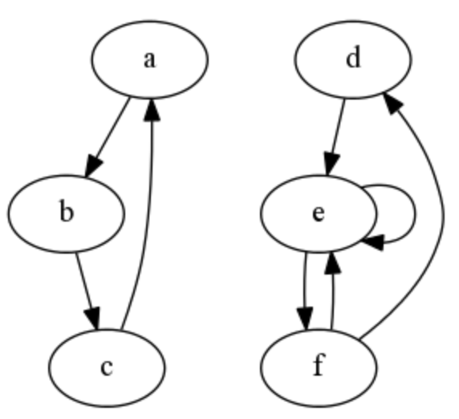
1 | ex2 :: [(String, String, [String])] |
請看:
Graph Theory(图论)
fgl库提供了更有效的图结构和各种常见的图论操作。例如，在编译器设计的控制流分析中，计算图的优势边界经常出现。1
2
3
4
5
6
7
8
9
10
11
12
13
14
15
16
17
18
19
20
21import qualified Data.Graph.Inductive as G
cyc3 :: G.Gr Char String
cyc3 = G.buildGr
[([("ca",3)],1,'a',[("ab",2)]),
([],2,'b',[("bc",3)]),
([],3,'c',[])]
-- Loop query
ex1 :: Bool
ex1 = G.hasLoop x
-- Dominators
ex2 :: [(G.Node, [G.Node])]
ex2 = G.dom x 0
x :: G.Gr Int ()
x = G.insEdges edges gr
where
gr = G.insNodes nodes G.empty
edges = [(0,1,()), (0,2,()), (2,1,()), (2,3,())]
nodes = zip [0,1 ..] [2,3,4,1]
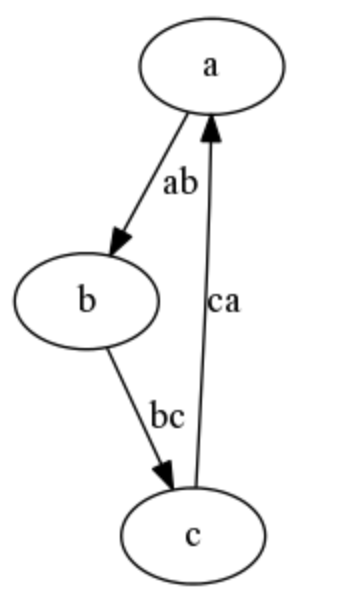
DList
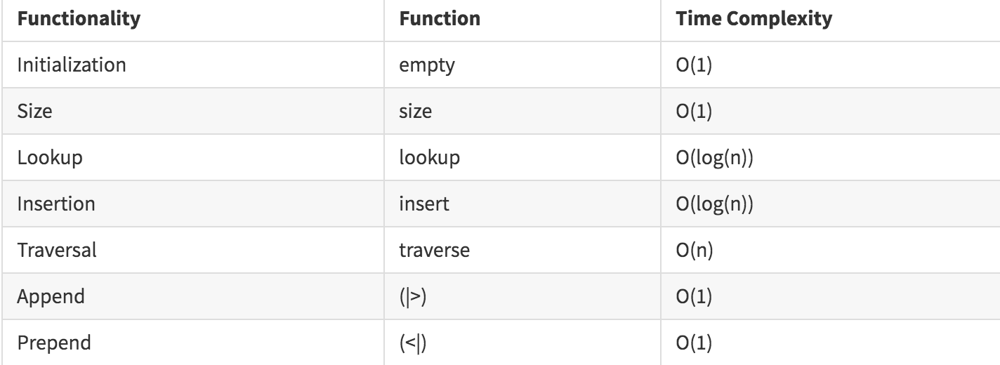
dlist是一种类似于列表的结构，它针对O(1)追加操作进行了优化，在内部使用列表结构的Church编码。它特别适合于仅append的操作，并且在显示整个结构时只需要访问它。它特别适合在Writer monad上使用。
1 | import Data.DList |
Sequence
序列数据结构在结构上与列表类似，但针对append/prepend操作和traversal(遍历)进行了优化。1
2
3
4
5
6
7
8
9
10
11
12import Data.Sequence
a :: Seq Int
a = fromList [1,2,3]
a0 :: Seq Int
a0 = a |> 4
-- [1,2,3,4]
a1 :: Seq Int
a1 = 0 <| a
-- [0,1,2,3]
Fingertree(指状树)
TODO
請看:
Vault
TODO
請看: